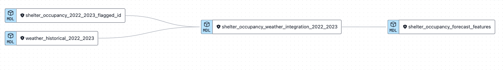

Introduction
In the dynamic urban landscape of Toronto, overnight shelters represent more than just a temporary haven for the homeless. These facilities are a vital component of the city’s social support network, providing safety and stability for individuals and families facing the harsh realities of urban life. As an essential service, these shelters embody the collective effort to uphold the welfare of all citizens, ensuring that the city’s commitment to caring for its most vulnerable members is not just a promise, but a reality.
Problem Statement
The challenge lies in effectively forecasting the occupancy rates of these shelters. Accurate predictions are not merely statistical triumphs; they are the an important tool in the complex machinery of social support, determining the operational efficacy and resource optimization of these critical infrastructures. The implications of such forecasts extend beyond the confines of the shelters themselves, influencing policy-making, urban planning, and emergency response initiatives. The margin for error is narrow: underestimate, and we risk leaving individuals or families exposed to the elements. Overestimate, and we divert precious resources that could be utilized more effectively elsewhere. The quest for a reliable prediction model is not just a technical endeavor, it is a moral imperative to ensure that the well being of those in need is safeguarded.
Solution Strategy
The proposed solution leverages the power of machine learning to analyze historical shelter occupancy data and generate accurate forecasts for overnight shelter occupancy. The approach is to train sophisticated ML models that can identify patterns and trends from past data, considering various factors such as location, day of the week, month of the year, weather conditions, etc. By feeding the models with historical data, they learn to anticipate future demands with a considerable degree of accuracy. This predictive capability is enhanced by incorporating advanced algorithms and ensemble methods that can adapt to the changing dynamics of urban life. The end goal is a robust model capable of aiding shelter administrators to anticipate nightly occupancy rates and thus manage their operations with unprecedented foresight and efficiency.
Implementation Strategy
- Data Collection and Management:
- Utilize the Toronto Open Data API to collect historical occupancy data from multiple overnight shelters.
- Gather additional relevant datasets such as historical weather patterns from AccuWeather API.
- Data Storage:
- Store the collected data securely in Google BigQuery, ensuring the database scales with the inflow of new data and is optimized for complex analytical queries.
- Data Transformation:
- Implement DBT (Data Build Tool) to perform and manage necessary data transformations, ensuring that the data is clean, structured, and ready for model consumption.
- Machine Learning Model Development:
- Utilize H2o AutoML, an automated machine learning platform, to build and train predictive models.
- Evaluate various models and their performances, tuning hyper-parameters and selecting the best-performing model for deployment.
- Prediction Deployment:
- Deploy the trained machine learning model via a Shiny app.
- Implement robust app features that allow for real-time updates and the monitoring of model performance over time.
Your can interact with the shiny app here.
By following this implementation strategy, this project aims to harness the vast potential of ML to deliver a solution that not only serves the immediate needs of overnight shelters in Toronto but also sets a standard for data-driven decision-making in humanitarian efforts city-wide.
The following sections walk through each step of the implementation strategy in more detail.
Data Collection
The first phase of the project involves gathering historical raw data on overnight shelter occupancy using Open Data APIs, which is then uploaded to BigQuery using an R script. This includes a one-time data upload for historical data from 2022 and ongoing daily updates for 2023. To enhance our prediction model, we also collect five-day weather forecasts for the Toronto area from the AccuWeather API. This weather information is a key factor in predicting shelter needs over the next five days, along with the occupancy data.
Data Storage
As mentioned earlier, this raw data in stored in a BigQuery project, in a dataset called “raw_data”. This dataset is also used to store historical daily weather data which is used as part of features for predicting overnight shelter occupancy.
Data Transformation
The data transformation phase is critical to ensuring data quality and readiness for subsequent analysis and predictive modeling. Leveraging DBT, a set of data models are created to convert raw datasets into a refined form and stored in a dataset named clean_data.

Below is an explanation of what each DBT model does;
- Data Cleaning with DBT Models:
shelter_occupancy_2022_2023: This model consolidates raw shelter occupancy records from 2022 and 2023. It performs a pivot transformation, changing the dataset from a wide format (with many columns) to a long format (with rows representing each data point), facilitating easier manipulation and analysis.shelter_occupancy_id_mapping: To standardize and uniquely identify characteristics within the data, this model assigns IDs to distinguishable attributes like program model and sector. This process aids in maintaining data integrity and consistency.shelter_occupancy_2022_2023_flagged_id: Building on the prior model, this model crafts unique primary keys that map each data row to a specific shelter location and program offering, thereby enabling precise tracking and referencing within the dataset.weather_historical_2022_2023: Here, historical weather information for 2022 and 2023 is merged.
- Preparing Data for Machine Learning:
shelter_occupancy_weather_integration_2022_2023: This model integrates daily shelter occupancy figures with corresponding weather metrics for each particular date. It ensures completeness by employing a 3-day rolling average to impute any gaps in the weather dataset, thereby maintaining the continuity and reliability of the data for machine learning purposes.
- Feature Engineering for Predictive Modeling:
shelter_occupancy_forecast_features: Targeting predictive analytics, this model generates forward-looking features essential for forecasting shelter occupancy. It projects the next five days’ dates for each shelter and program pairing and merges in the weather forecast for the same horizon. The result is a feature-rich dataset, crafted to anticipate future occupancy rates.
Machine Learning & Model Development
In this phase, data is imported from BigQuery into R where machine learning models are built to predict overnight shelter occupancy. A few caveats in this phase -
In this beta phase, I focused on creating predictions for the top 3 organizations with the highest number of locations. These include City of Toronto (Org ID 1), Homes First Society (Org ID 15) and Dixon Hall (Org ID 6). All together, these 3 organizations have about 40 distinct locations. Again in a later phase, I hope to expand this project to include all locations.
I also focused on only modeling locations that have been open (in 2022 and 2023) for at least 75% of the year.
According to the information in the shelter occupancy dataset, there are two measures of capacity; Funding capacity reports the number of beds or rooms that a program is intended to provide. Actual capacity reports the number of beds or rooms in service and showing as available for occupancy in the shelter management information system at the time of reporting. There are a number of reasons why beds or rooms may be temporarily out of service, including maintenance, repairs, renovations, etc. Thus for making future predictions, a 7 day average of Actual capacity was used to estimate actual capacity. Also if the model’s prediction of overnight shelter occupancy for beds or rooms (occupied) exceeded the actual capacity, the occupied value was adjusted down to the actual capacity value. For example if the actual capacity for a beds in a particular location was estimated to be 70, and the model predicted occupied beds for this location on a given night to be 73, this predicted value of 73 was adjusted down to 70 (to match the actual capacity), and thus resulting in predicted occupancy rate of 100%.
As mentioned earlier, H2o AutoML was used to create machine learning models. The model currently being used for making predictions is the H2o AutoML leader (StackedEnsemble_BestOfFamily_1_AutoML_2_20231026_61754). A Stacked Ensemble is a model that combines the strengths of multiple algorithms to make predictions. Looking at the metrics, the training data reflects an extremely promising model with very low error rates; MSE of 0.0648, RMSE of 0.2554, MAE of 0.1737.
However, a markedly different picture is painted when we consider the validation data metrics, which reveal an MSE of 152.8 and an RMSE of 12.3630. The MAE on the validation set is 7.1667. The large discrepancy between the training and validation metrics raises concerns about the model’s ability to generalize, suggesting that it may have over-fitted to the training data.
Cross-validation metrics serve as a middle ground, offering a more generalized assessment of model performance. These are less optimistic than the training metrics but far better than the validation metrics. With a cross-validated RMSE of 0.9291 and MAE of 0.3556, the model demonstrates decent predictive ability on data it was not trained on. However, the higher standard deviation in these cross-validated metrics suggests some variability in the model’s performance across different subsets of the data.
It is essential to note that discrepancies between training and validation metrics, such as those observed, could potentially signal data leakage, overfitting, or issues with the data splits, all of which are aspects of the pipeline that require careful attention. However, such concerns will be addressed in the subsequent iterations of the project, where model accuracy and generalization become the central focus.
The immediate goal is to establish that the pipeline correctly processes data through all its stages, ensuring that the model receives the input in the expected format and that the output is appropriately captured and stored. This verification is crucial for scalability and reliability before fine-tuning the model’s predictive capabilities. Once this is confirmed, iterative improvements on the model, such as hyperparameter tuning, cross-validation strategy adjustments, and feature selection, will be undertaken to optimize the model for accuracy and robustness.
Predictions
Before predictions can be made, an essential data preparation step is conducted using a DBT model named shelter_occupancy_forecast_features. This DBT model is responsible for transforming raw data into a structured format that can be utilized for making predictions, essentially generating features that will feed into the stacked ensemble model. The step-by-step process is described below;
Feature Engineering in BigQuery: The raw data is processed by the DBT model within BigQuery, The
shelter_occupancy_forecast_featuresmodel applies necessary transformations and engineering to prepare the dataset with features suitable for the predictive model.Data Import into R: Once the features are ready, the processed dataset is imported into an R environment.
Prediction with the Stacked Ensemble Model: Within R, the stacked ensemble model is applied to the feature set to generate forecasts. Given the model’s composition from the AutoML run, it utilizes its combination of base learners and meta-learner to output highly informed predictions.
Export Predictions to BigQuery: The predictions made by the ensemble model are then exported back into BigQuery. This reintegration allows for seamless storage and potential further analysis within the cloud data warehouse environment.
This pipeline exemplifies a modern analytical workflow, leveraging the strengths of various technologies; BigQuery for scalable data storage and preprocessing, DBT for data transformation and feature engineering, R for statistical modeling and predictions, and H2O for advanced machine learning techniques. By loading the predictive results back into BigQuery, the data becomes readily accessible for business intelligence tools, further analytics, or downstream applications, ensuring a cohesive and continuous flow of data from raw inputs to actionable outputs.
Deployment
The deployment of the shelter occupancy forecast into a Shiny application represents the culmination of the data pipeline and the predictive modeling process. Shiny is a highly flexible R package that enables the creation of interactive web applications directly from R. Here’s how the final stage unfolds:
Importing Predictions: The occupancy predictions, which have been computed by the H2o Stacked Ensemble model and stored in BigQuery, are imported into the Shiny application environment.
Interactive User Interface: The Shiny application is developed with a user-friendly interface that presents the forecast data to end-users. It will feature:
Data Table: An interactive table displaying the forecasted overnight shelter occupancy across multiple locations and programs. This table allows for sorting, searching, and perhaps filtering to enable users to easily navigate through the data.
Map Visualization: A map component will visualize the different shelter locations. The map will be color-coded based on predicted occupancy rates, providing an intuitive, at-a-glance understanding of the data. Locations can be marked with pins or regions shaded to reflect the predicted occupancy, giving users a geographical context.
User Interaction and Customization: Users will have the ability to select different dates, locations, or other relevant parameters to refine the predictions displayed. The Shiny app’s reactivity will ensure that any changes in user input will automatically update the visualizations and data presented.
This Shiny application will serve as a decision support tool, enabling stakeholders and decision-makers to access predictive insights in a user-friendly format. It provides a practical means for users to explore and utilize the model’s forecasts to manage shelter occupancy more effectively, ultimately aiding in resource planning and allocation for the locations and programs in question.
Conclusion
This project highlights the potential of predictive analytics in the realm of social good. By predicting shelter occupancy rates with greater accuracy, this kind of analysis not only helps cities optimize resource allocation but also serves as a beacon of hope, ensuring that shelters can prepare for and meet the needs of the most vulnerable members of society. It’s a vivid illustration of how data, technology, and human compassion can intersect to create a profound and positive social impact.
Additionally, this project demonstrates the practical implementation of a real-world analytics pipeline, from data collection to the complexities of model deployment. By leveraging public APIs, coupled with the analytical capabilities of R, the robust storage of BigQuery, and the power of DBT for data modeling, we’ve demonstrated a successful proof of concept.
Finally this project also demonstrates some key competencies including business understanding that guides the project’s direction, data gathering and working with APIs, sophisticated data engineering to sculpt raw information into actionable insights, advanced machine learning to forecast outcomes accurately, and effective model deployment to bring these insights into operational use.
Additional Next Steps
There are still a few things that could enhance this project as well as some improvements that could be made to the current workflow;
- Accuracy Tracking:
Script for Tracking Predictions vs. Actuals: Develop and integrate a script within the R environment that routinely compares the predicted values of overnight shelter occupancy with the actual figures as they become available. include statistical measures as MAE, RMSE to compute accuracy of predictions in production.
Alerts for Deviations: Implement an alert system that notifies the team when the discrepancy between predicted and actual values exceeds a predefined threshold, indicating a potential drift in model performance or significant changes in the underlying data.
- Scale Model Training and Predictions to all Locations:
- Currently, a few selected locations are being used in this project. The end goal is to scale modeling and predictions to all locations.
- Better Model Experiment Tracking:
- Incorporate model tracking and experiment logging capabilities using a tool like MLflow.
- Enhance Shiny Application Enhancement with Modules:
- Modular Design: Refactor the existing Shiny app into a modular design. Shiny modules are reusable parts of a Shiny app that can simplify app development and maintenance. They help in organizing the code, especially for complex applications with multiple reactive outputs and inputs.